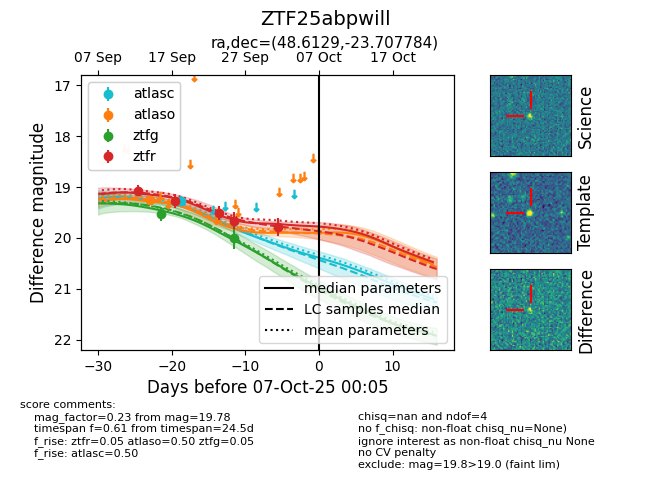
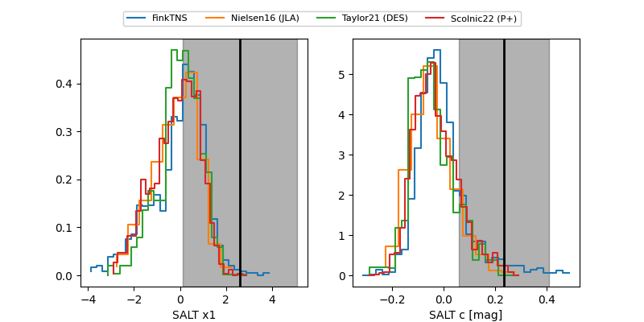

FINK: ZTF25abpwill
Lasair: ZTF25abpwill
ALeRCE: ZTF25abpwill
ZTF25abpwill (ztf,fink)
equatorial (ra, dec) = (48.6129,-23.70778)
galactic (l, b) = (214.9680,-57.63400)


last atlasc=19.27, atlaso=19.26, ztfg=20.01, ztfr=19.78
1 atlasc, 1 atlaso, 2 ztfg, 5 ztfr detections